World 1: Yoshi's Island
Drag the map around to explore everything.
Click or tap on to see more about whatever it's pointing to!
to see more about whatever it's pointing to!
Click or tap on
to see more about whatever it's pointing to!
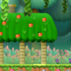
Yoshi's House
The home of the Mushroom Kingdom's most famous dinosaur! He's not home, but maybe there's a secret hidden here?
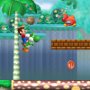
World 1-1: Palm Beach
The start of Mario's adventure. A hilly but peaceful beach with lots of sunshine.
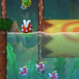
World 1-3: Springwater Swamp
A deep, dark and flooded forest with lots of life in its waters. Watch out for Wigglers!
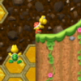
World 1's Tree Tower
A tall tower disguised as a tree. King Fuzzy stands guard at the very top, protected by an army of walking and climbing Koopa Troopas.
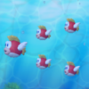
World 1-6: Rainshed Pond
A giant pool of rainwater. Rumours say there's a big secret in it somewhere - can you find it?
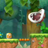
World 1-8: Switch Shift Grove
A switch-filled level where anything and everything can move. Keep an eye out, it'd be easy to hide something here...World 2: Rubble Ruins
Drag the map around to explore everything.
Click or tap on to see more about whatever it's pointing to!
Click or tap on
to see more about whatever it's pointing to!
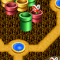
Soggy Sewers
Anything that Mario still remembers about plumbing will be put to the test in this wet, pipe-laden area!
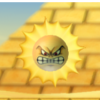
World 2-8: Searing Sands
Watch out! Angry Sun is lurking around this level, following Mario's every move and ready to make his day a bit hotter...
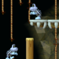
World 2-A: Fossil Tunnel
A handy hidden shortcut which cuts through a nearby cave and goes straight to the Castle.World A: Goldwood Forest
Drag the map around to explore everything.
Click or tap on to see more about whatever it's pointing to!
Click or tap on
to see more about whatever it's pointing to!
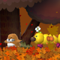
World A-1: Autumn Plateau
The entrance to the forest, filled with Wigglers, Bramballs and Monty Moles.
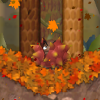